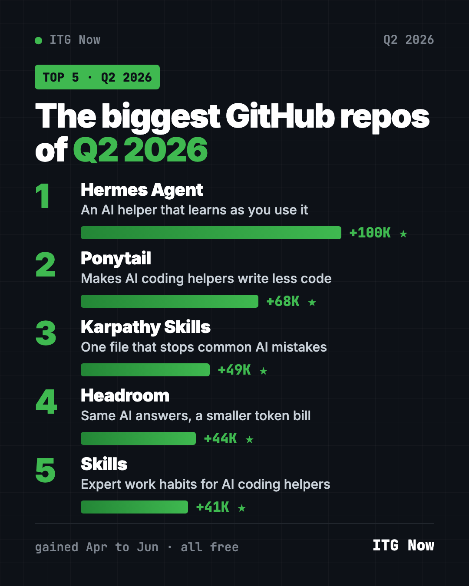
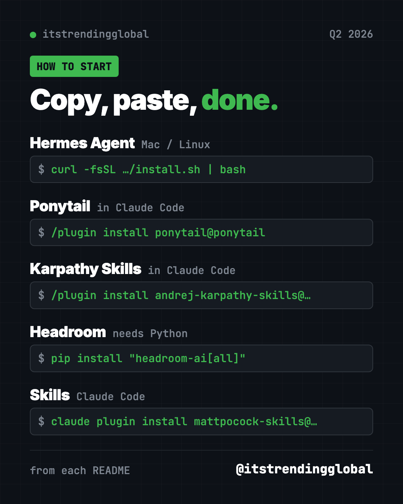

Best GitHub Repos Q2 2026: The 5 Biggest of the Quarter
- Published 15 Oct 2026
- Updated 16 Oct 2026
- 9 min read
- By the ITG Now team
In this guide (9)
- Key takeaways
- The 5 best GitHub repos of Q2 2026 at a glance
- 1. Hermes Agent: the AI helper that learns as you use it
- 2. Ponytail: the lazy senior developer inside your AI
- 3. Karpathy Skills: one file that stops common AI mistakes
- 4. Headroom: same AI answers, smaller bill
- 5. Skills: expert work habits for your AI helper
- Which one should you try first?
- FAQ
The best GitHub repos Q2 2026 produced were Hermes Agent, Ponytail, Karpathy Skills, Headroom and Matt Pocock's Skills. Across April, May and June 2026, these five free, open-source projects drew the most new GitHub stars.
A GitHub star is like a bookmark or a "like." Q2 had one big theme: making AI helpers behave better. One is an AI assistant that learns as you use it. The other four plug into AI coding helpers like Claude Code and Codex. They make them think first, write less, and cost less. For each one you get everyday uses, the setup, and a prompt for your AI helper.
Key takeaways
- Hermes Agent was the biggest repo of Q2 2026, with about 100,000 new stars over the quarter. It is an AI assistant that learns from what it does.
- Ponytail gained about 68,000 stars in June alone. It makes AI coding helpers write less, simpler code.
- Karpathy Skills is one rules file, based on AI expert Andrej Karpathy's notes, that stops common AI coding mistakes.
- Headroom shrinks what your AI reads, so every job costs less.
- Skills by Matt Pocock adds proven work habits, like questioning you before building.

The 5 best GitHub repos of Q2 2026 at a glance
| Repo | What it does | Stars gained in Q2 | Free? | Works with |
|---|---|---|---|---|
| Hermes Agent | AI assistant that learns as you use it | about +100K | Yes (MIT), AI model use may cost money | Mac, Linux, Windows |
| Ponytail | Makes AI coding helpers write less code | +68K | Yes (MIT) | Claude Code, Codex and more |
| Karpathy Skills | One rules file against AI coding mistakes | about +49K | Yes (MIT) | Claude Code, Cursor |
| Headroom | Shrinks what AI reads to cut the bill | +44K | Yes (Apache-2.0) | Claude Code, Codex and more |
| Skills | Proven work habits for AI helpers | +41K | Yes (MIT) | Claude Code, Codex, Copilot, Gemini CLI |
How we ranked them: we added up each repo's star gains from the months it made our monthly top 5 (April, May and June). Total star counts below were checked on GitHub on October 16, 2026.
💡 Tip: Some steps use the "terminal," a plain text window where you type commands. On a Mac, open Terminal. On Windows, open PowerShell. Paste a line, press Enter, and wait.
1. Hermes Agent: the AI helper that learns as you use it
Stars: about +100K in Q2 (+68K April, +4.7K May, +27K June) · about 254K total
What it is: Hermes Agent is a free AI assistant from Nous Research. After a hard task, it saves how it did it as a new skill and improves that skill over time. It remembers you across chats. You can talk to it in your terminal or in Telegram, Discord, Slack, WhatsApp and Signal. It can run jobs on a schedule, like a morning report.
Who it's for: People who want one AI helper in the chat apps they already use.
How you'd use it:
- Get a short news summary on Telegram every morning.
- Send a voice memo and get back a tidy to-do list.
- Have it check a folder each week and message you what changed.
Install it: On Mac, Linux or WSL2, copy and paste this:
curl -fsSL https://hermes-agent.nousresearch.com/install.sh | bash
On Windows, paste this into PowerShell:
iex (irm https://hermes-agent.nousresearch.com/install.ps1)
Then run hermes setup to pick a model, and hermes to start chatting.
Or let Claude or Codex do it: Claude Code and OpenAI Codex are AI helpers that can run setup steps for you. Paste this:
Install Hermes Agent from https://github.com/NousResearch/hermes-agent
using its Quick Install. Run hermes setup with me, explain each choice
in plain words, and help me connect it to Telegram.
See Hermes Agent on GitHub · Read the full guide
2. Ponytail: the lazy senior developer inside your AI
Stars: +68K in Q2 (all in June) · about 164K total
What it is: Ponytail is an add-on that makes AI coding helpers act like a quiet senior developer. Before writing code, it checks what already exists and writes only what the job needs. Its README reports 53% less code and 26% lower cost in its own Claude Code test, without skipping safety checks.
Who it's for: Anyone building with Claude Code, Codex or Cursor who gets bloated answers.
How you'd use it:
- Ask for a feature and get a few lines instead of a new library.
- Run
/ponytail-reviewto check your latest changes for bugs. - Run
/ponytail-auditto find what to cut from a whole project.
Install it: In Claude Code, paste these two lines one at a time:
/plugin marketplace add DietrichGebert/ponytail
/plugin install ponytail@ponytail
Or let Claude or Codex do it:
Install the Ponytail plugin from https://github.com/DietrichGebert/ponytail
following its README, then run /ponytail-audit on this project.
See Ponytail on GitHub · Read the full guide

3. Karpathy Skills: one file that stops common AI mistakes
Stars: about +49K in Q2 (+43K April, +6.3K May) · about 220K total
What it is: Andrej Karpathy is a well-known AI researcher. He listed ways AI coding helpers go wrong: wrong guesses, bloated code, and edits to things nobody asked to change. This project turns his notes into one rules file called CLAUDE.md with four principles. Think before coding. Keep it simple. Change only what you must. Set clear goals and check them.
Who it's for: Anyone who uses Claude Code and wants fewer surprises, with almost no setup.
How you'd use it:
- Drop it into a project so the AI asks before guessing.
- Get smaller, cleaner changes you can actually review.
- Turn "fix the bug" into "write a test that shows the bug, then make it pass."
Install it: In Claude Code, paste these two lines one at a time:
/plugin marketplace add forrestchang/andrej-karpathy-skills
/plugin install andrej-karpathy-skills@karpathy-skills
Prefer one file per project? Copy and paste this in your project folder:
curl -o CLAUDE.md https://raw.githubusercontent.com/forrestchang/andrej-karpathy-skills/main/CLAUDE.md
Or let Claude or Codex do it:
Add the guidelines from https://github.com/multica-ai/andrej-karpathy-skills
to this project's CLAUDE.md without deleting what is already there.
Then explain the four principles to me in plain words.
See Karpathy Skills on GitHub · Read the full guide
4. Headroom: same AI answers, smaller bill
Stars: +44K in Q2 (all in June) · about 75K total
What it is: AI services charge by the "token," a small chunk of text. Headroom squeezes logs, files and search results before the AI reads them. Its GitHub page says that means about 20% fewer tokens for coding helpers and 60 to 95% fewer for data files, with the same answers. The squeezing happens on your computer.
Who it's for: Heavy AI helper users who watch their bill or usage limits.
How you'd use it:
- Wrap Claude Code once and keep working while it spends less.
- Open the live dashboard to see your savings.
Install it: Install Python, then copy and paste this:
pip install "headroom-ai[all]"
headroom wrap claude
Or let Claude or Codex do it:
Install Headroom from https://github.com/headroomlabs-ai/headroom following
its "Get started" steps, wrap my Claude Code, and run headroom doctor.
See Headroom on GitHub · Read the full guide
5. Skills: expert work habits for your AI helper
Stars: +41K in Q2 (+6K May, +35K June) · about 293K total
What it is: Coding teacher Matt Pocock shares the skills he uses every day. A skill is a short set of instructions for one kind of job. /grill-me makes the AI question you until your plan is clear. Others add tests and careful bug fixing.
Who it's for: Anyone whose AI helper builds the wrong thing.
How you'd use it:
- Run
/grill-mebefore any new plan, even a non-code one. - Use
/tddso the AI checks its own work as it goes.
Install it: For Claude Code, copy and paste this:
claude plugin install mattpocock-skills@claude-plugins-official
Or let Claude or Codex do it:
Install Matt Pocock's skills from https://github.com/mattpocock/skills
following the README for this agent, then run setup-matt-pocock-skills.
See Skills on GitHub · Read the full guide
⚠️ Heads up: Ponytail, Karpathy Skills and Skills all shape how your AI writes code. Try one at a time, so you can tell which one helps.
Which one should you try first?
- You want a helper in your phone's chat apps: start with Hermes Agent.
- You want fewer AI mistakes with zero effort: add Karpathy Skills. It is one file.
- Your AI writes too much code: try Ponytail.
- Your AI bill worries you: try Headroom.
- Your AI builds the wrong thing: try Skills and start with
/grill-me.
For the news side of the quarter, read June 2026 in AI. Then see how the next quarter went in the 5 biggest GitHub repos of Q3 2026.
FAQ
What were the best GitHub repos of Q2 2026?
Hermes Agent, Ponytail, Karpathy Skills, Headroom and Matt Pocock's Skills. Hermes Agent led with about 100,000 new stars across April, May and June.
What are the best GitHub repos for Claude Code from Q2 2026?
Ponytail, Karpathy Skills, Headroom and Skills all plug into Claude Code. Karpathy Skills is the simplest, since it is a single rules file.
Are these repos free?
Yes, all five are free and open source. Hermes Agent needs an AI model to talk to, and some models charge for use.
Do I need to code to use them?
No. Paste our ready-made prompt into Claude Code or Codex and it handles the setup. Hermes Agent is the friendliest if you have never coded.
How did you rank the quarter?
We added up the star gains each repo had in our monthly top 5 lists for April, May and June 2026. A repo's gains in months it missed the top 5 are not counted.
Keep reading

Trending GitHub Repos October 2026: The Top 5 So Far
The trending GitHub repos of October 2026 so far: a free Photoshop-style editor, an AI art studio, a big AI model for gaming PCs and more, explained.

Trending GitHub Repos This Week, Oct 5 2026: The Top 5
Trending GitHub repos this week Oct 5 2026: Matt Pocock's skills, the openGym workout tracker, e2e testing, HyperFrames video and claude-mem memory.

GitHub Trending September 28, 2026: Hindsight and Paperclip
GitHub trending September 28 2026: Hindsight, Paperclip, NVIDIA's OpenShell and a free 542-lesson AI course, with setup steps for each.